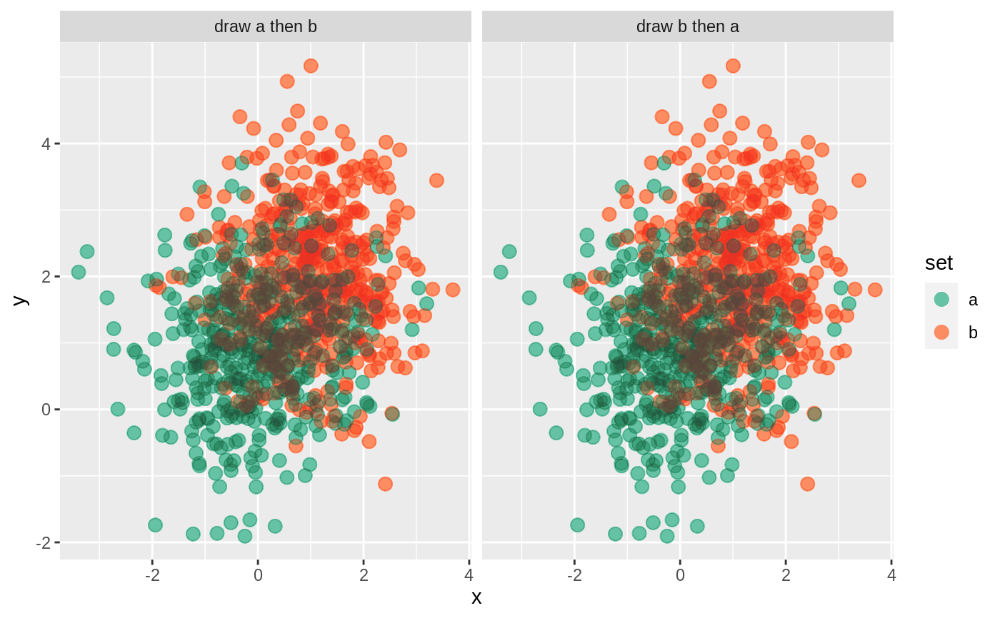

Operator for stacking blends: blend(..1) ^ blend(..2) is equivalent to stack_blends(..1, ..2).
# S4 method for ggblend,ggblend
^(e1, e2)A "ggblend" object as returned by blend(), stack_blends(), etc.
A "ggblend" object as returned by blend(), stack_blends(), etc.
An algebraic alternative syntax to stack_blends().
Other blending functions and operators:
blend(),
stack_blends(),
times-ggblend
library(ggplot2)
# create two versions of a dataset, where draw order can affect output
set.seed(1234)
df_a = data.frame(x = rnorm(500, 0), y = rnorm(500, 1), set = "a")
df_b = data.frame(x = rnorm(500, 1), y = rnorm(500, 2), set = "b")
df_ab = rbind(df_a, df_b) |>
transform(order = "draw a then b")
df_ba = rbind(df_b, df_a) |>
transform(order = "draw b then a")
df = rbind(df_ab, df_ba)
# it can be useful to stack multiple versions of the same layer on top of
# each other to create a desired effect: here, `geom_point()` is used
# twice to lighten the multiply effect (otherwise points become very dark)
df |>
ggplot(aes(x, y, color = set)) +
geom_point(size = 3) * blend("lighten") +
geom_point(size = 3) * blend("multiply", alpha = 0.65) +
scale_color_brewer(palette = "Set2") +
facet_grid(~ order)
#> Warning: blend = "lighten" does not appear to be supported by your graphics device.
#> - Blending output may not be as expected.
#> - If your current graphics device *does* support blend = "lighten"
#> but auto-detection failed, consider reporting a bug.
#> Warning: blend = "multiply" does not appear to be supported by your graphics device.
#> - Blending output may not be as expected.
#> - If your current graphics device *does* support blend = "multiply"
#> but auto-detection failed, consider reporting a bug.
#> Warning: Group definition failed
#> Warning: Group definition failed
#> Warning: Group definition failed
#> Warning: Group definition failed

# we can reduce code duplication by using `^`
df |>
ggplot(aes(x, y, color = set)) +
geom_point(size = 3) * blend("lighten") ^ blend("multiply", alpha = 0.65) +
scale_color_brewer(palette = "Set2") +
facet_grid(~ order)
#> Warning: blend = "lighten" does not appear to be supported by your graphics device.
#> - Blending output may not be as expected.
#> - If your current graphics device *does* support blend = "lighten"
#> but auto-detection failed, consider reporting a bug.
#> Warning: blend = "multiply" does not appear to be supported by your graphics device.
#> - Blending output may not be as expected.
#> - If your current graphics device *does* support blend = "multiply"
#> but auto-detection failed, consider reporting a bug.
#> Warning: Group definition failed
#> Warning: Group definition failed
#> Warning: Group definition failed
#> Warning: Group definition failed